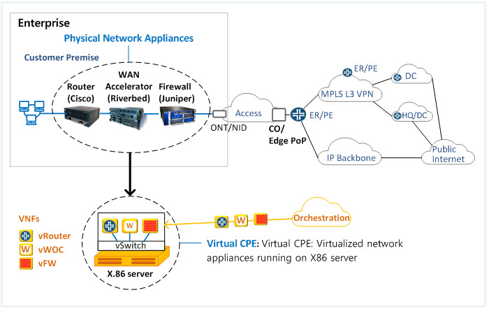
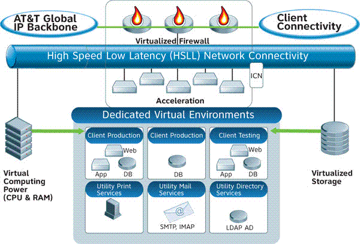
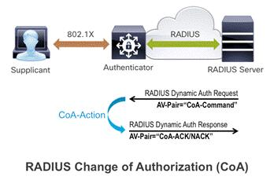

Jansson Portfolio
Current Projects

virtual Border Network Gateway - The vBNG is a virtual CPE residing in the Cloud that is used to manage edge network routing between the access platform and backbone. It provides access services to subscriber devices, stores security filters and QoS settings while acting as a DHCP proxy.

Infrastructure as a Service (IaaS)- providing front end user tools to facilitate performance monitoring. This includes accessing data mining stores that capture a service performance logs and alarms to gauge a functions overall performance.

Change of Authorization (COA)- providing subscriber QoS policy to RADIUS. The CoA request packet pushed to a controller to keep a subscriber's ordered service in sync.

Full Stack Engineering Projects - working program courses outlined
by Udacity focused on Full-stack programming. The intention is to become
more current with programming techniques and languages. Background in
'C', Perl and Assembler.
[click on image to view Movie Maker Project code on Guthub.].
X
About Me
Current focus is applying new programming skills via small classroom projects using HTML, CSS, Javascript and Python
My goal is to become a productive Full Stack developer.